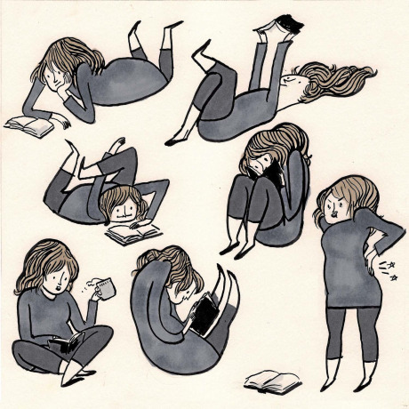

If you read books, if you are passionate about them, then you have had it too. Just like normal people have a sleep-in day, a bad-hair day (I am told these are not intentional), I have book days. You know that day when you wake up and know that nothing but the feel of a thick book in your hands and hours of reading can satisfy you? Yeah, that day. I am pretty sure my fellow bookworms (bibliophiles for posh people) have them too.
There are generally three requirements for a book day:
The reason for my most recent book day was Frank Herbert's 'Dune' (Brandon Sanderson, Jim Butcher and Patrick Rothfuss's works have been guilty too) which I devoured while plonked upon a mountain of cushions. How does a typical devouring session go? Assuming I am done with breakfast, I will spend about 10-12 hours reading during which I valiantly (stupidly?) ignore my parched throat, my stomach's grumbles for grub and the curses of my shoulders and sides thanks to the multitude of Yoga-like postures I tend to adopt. Of course, it gets worse when the book in question is a page-turner, so the reading session functions as a workout as well.
Just like a boombox in an anechoic chamber, when a book is in my hands, it commands all my attention, everything but the text is out of focus. Call it myopia if you like, I think of it as passion. How do your reading days go? Do you just sit at a desk monotonously or do you change positions like a mad monkey? Do you focus on one book at a time or switch between multiple?